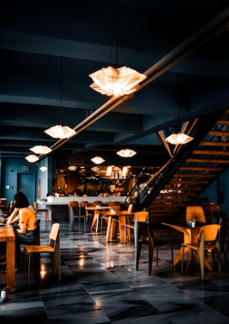
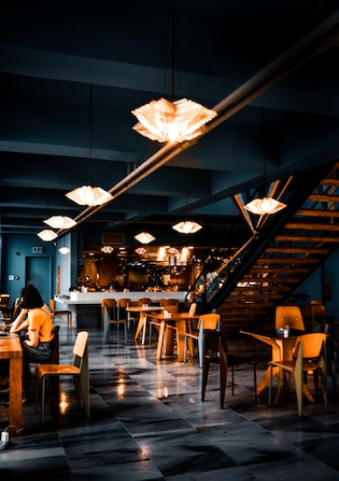

Notre histoire
Depuis nos débuts en janvier 2023 avec un espace
situé dans le 12 arrondissement de paris, la fouchette d’or est l’un des meilleurs restaurants
gastronomique de France.
Présenté par le chef Frédéric Sananes,
la
fourchette d’or se concentre sur des
plats de qualités pour
une clientèle de qualité. S’inspirant de la gastronomie classique française, vous allez
découvrir
des plats typique du terroir revisité à la sauce du chef.
Le développement de la fourchette d’or à été
animé
par l’amour pour la cuisine et
le désir de vouloir satisfaire notre clientèle.
Notre espace
Venez découvrir notre splendide restaurant situé dans
le 12
arrondissement. Ce dernier offre une vue sur la magnifique
école de l’esgi et son splendide Auchan qui propose des
denrées alimentaires de type rare.
Notre restaurant dispose également d’une terrasse pour
ceux
arrondissement. Ce dernier offre une vue sur la magnifique
école de l’esgi et son splendide Auchan qui propose des
denrées alimentaires de type rare.
qui souhaitent mangés a pleine air.
.png)
 


Notre cuisine
Venez découvrir notre splendide restaurant situé dans
le 12
arrondissement. Ce dernier offre une vue sur la magnifique
école de l’esgi et son splendide Auchan qui propose des
denrées alimentaires de type rare.
Notre restaurant dispose également d’une terrasse pour
ceux
arrondissement. Ce dernier offre une vue sur la magnifique
école de l’esgi et son splendide Auchan qui propose des
denrées alimentaires de type rare.
qui souhaitent mangés a pleine air.
.jpg)